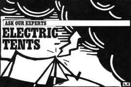

My tent poles are made of fiberglass, not metal, and this is a great comfort to me when violent electrical storms thunder around my campsite. But I want a bigger tent and the available models all seem to have aluminum poles. Any information about lightning being attracted to aluminum?
When the perfume of ozone surrounds your tent, it may be reassuring to know that metal does not; but aluminum poles aren't a pronounced liability over fiberglass onesmost of which have metal ferrules. Lightning, impetuous stuff at best, is indiscriminate in its search for a path to ground. If it can't find a handy pole, it will settle for a body of (90%) water-you, for example. Jed Williamson, chairman of safety for the American Alpine Club, does say, "If your tent actually gets hit, aluminum poles will make the strike more severe."
Though avoiding lightning is mostly luck, remember the stuff we all learned as children. Stay off high, exposed ridges. Keep away from isolated features-a tree, a rock, a knoll. Head for ditches, depressions, stands of trees-places that decrease your odds of being lightning's fall guy. If storm-trapped in a tent, insulate your body from wet ground with rubber soles and foam pads, and think comforting thoughts: If struck, you have about a 70% chance of surviving and about a 50% chance of selling your story to Reader's Digest.
-David Swift
Mountaineer and freelance writer David Swift wrote the article "Tents" in MOTHER's March/April 1988 issue.
Unleaded Camping
I'm tempted to fill my Coleman camping appliances with unleaded pump gasoline, which is significantly cheaper than Coleman fuel. But I worry about whether it's safe to do so.
Back in my early Boy Scout days, we had Coleman lanterns and stoves but no Coleman fuel per se. Instead, we used what we called white gas, another name for petroleum naphtha-an important ingredient of gasoline that's now marketed primarily as a cleaning fluid and solvent. At that time, white gas was available in bulk at many service stations. Not so today. Then, in 1958, Coleman introduced its camping fuel, which is naphtha laced with an anticorrosive agent, as are all brands of camping fuel on the market.
Unleaded pump gas as a camping fuel? Well, it is done. And no, there's no significantly increased danger of flash-up. However, pump gas is heavily spiked with additives-the mix differing from season to season and region to region-some of which have great potential for corroding or otherwise damaging camping appliances. Pump gas can also present serious health hazards when burned in a poorly ventilated space.
For these reasons, I recommend against burning unleaded gas in camping appliances except in a pinch-and even then, use only regular, never premium, which contains even more additives.
-David Petersen
Dedicated camper David Petersen is MOTHER'S Western editor.
Sun-Dried Tomatoes
It looks like I'm going to have a bumper crop of tomatoes this year, and I'd like to duplicate those bottles of sun-dried tomatoes in olive oil that I see in gourmet shops. How do I go about it?
Tomatoes sun-dried in the Italian style seem to taste better than other dried tomatoes, but they're all delicious.
Use fully ripe but firm tomatoes of the blocky type, called plum, Italian or pear. (Other varieties are less meaty.) Four pounds will cover two large oven shelves (handy as drying racks) and will yield slightly under half a pound when dehydrated. You'll also need salt, white or white wine vinegar, olive oil and fresh or dried rosemary and/or thyme.
1. Pin cheesecloth or fine nylon net tightly over several cake racks or two oven shelves, or, for sun-drying only, a clean window screen.
2. Rinse the tomatoes and wipe them dry, being sure none of them are underripe or oversoft. Cut out the stem scar and hard core, then halve the tomatoes top to bottom and scrape out the seeds. Lay the halves, skin down, on the racks and sprinkle lightly with salt.
3. For outdoor drying, set the racks in full sun, leaving air space underneath. Cover with cheesecloth or more nylon netting, propped up at the corners to keep it away from the fruit. After a few hours, flatten the tomatoes with a rubber spatula and turn them. Turn twice a day until they're leathery but not hard, taking them indoors at night or whenever rainstorms threaten.
4. For oven-drying, put the tomatoes in a 200°F oven for 30 minutes, then reduce the heat to about 140°F. Flatten the tomatoes again when shrinkage has begun, and turn them and switch the positions of the racks every hour or two. You can do the drying in two sessions if it's more convenient.
5. If you're using a dehydrator, follow the manufacturer's instructions.
6. To finish the tomatoes, let cool, then toss them rapidly and briefly in a bowl with two or three tablespoons of distilled white vinegar or white wine vinegar. Dry them thoroughly with paper towels. Place them in a one-pint glass jar with a sprig or two of fresh or dried rosemary and/or thyme, then add mild olive oil to cover. Close the jar and leave the tomatoes in a cool place to mellow and develop flavor for three or four weeks. They'll keep for up to a year in the pantry or, better yet, inside your refrigerator.
Add a few of your tomatoes, drained and chopped, to a pizza; include strips in an antipasto, or serve them with a salad of greens and fresh cheese; or add a chopped handful to spaghetti sauce. The flavorful oil is good in a salad dressing or brushed over pizza before it's baked.
-Helen Witty
Fancy Pantry, Helen Witty's latest book (Workman, 1986), is a fine combination of home cooking and gourmet eating; it won a merit award from the International Association of Cooking Professionals.
If you'd like our panel of consultants to answer a question concerning some aspect of self-reliant living that has you stumped, send it to Ask Our Experts, Mother Earth News, P. 0. Box 70, Hendersonville, NC 28793.
|
 |
|
|